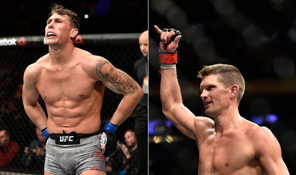
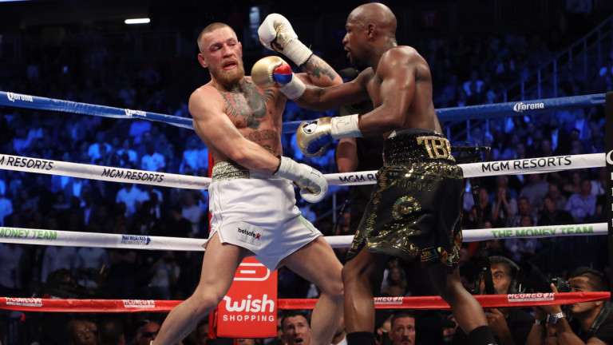
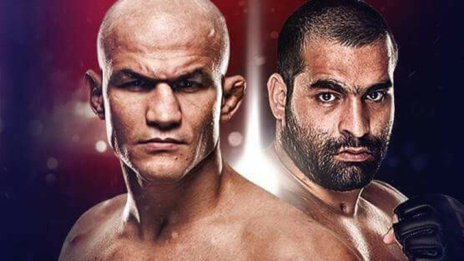

Вчера UFC-турнира беше проведен в Ливърпул.Нашият сайт е място, в което ще научавате всичко свързано с любимият ви боен спорт!

Стивън "Wonderboy" Томпсън срешу Дарън Тил
В битка между двама нападатели, Стивън "Уондърбой" Томпсън ще влезе в територията на врага, за да се изправи срещу Дарън Тил в мач, който би могъл да има огромни отклонения за разделението на "welterweight".За Тил, това не е само шанс да блести в родния му град, но е и възможност да се докаже, че той принадлежи към елитните бойци на 170 паунда, след като зашеметяващият му нокаут победи Доналд "Каубой" Cerrone миналата година. Докато е масивен боец за разделението на welterweight, който удря със сила, докато показва много разнообразна игра на краката. Играта на терена на Till не беше изпробвана много, но това вероятно няма да има значение в този мач, където ще вземе друг отбелязан нападател в Томпсън.

Флойд Мейуедър победи Конър Макгрегър в Лас Вегас!
Битката за милиард долара, дългоочакваният The Money Fight, боксът срещу ММА, Флойд Мейуедър срещу Конър Макгрегър завърши!
Американският, непобеден в цялата си професионална кариера боксьор, победи ирландския боец с технически нокаут в 10-ия рунд.
Така рекордът на легендата Роки Марчиано от 49 победи в 49 срещи е вече в историята, като това бе успех номер 50 за Флойд Мейуедър!
Преди началото на двубоя Макгрегър отказа да ползва специалната "камера за повишаване капацитета на белите дробове" на институа на UFC в Лас Вегас. Сега сигурно съжалява. Никакъв въздух не остана на боеца.

Багата стартира в UFC срещу бивш световен шампион
Благой Иванов ще започне своята кариера в UFC с невероятно труден сблъсък. Багата ще мери сили с бившия шампион в тежка категория Жуниор дос Сантос. Бразилецът е провел една успешна защита на пояса си, докато бе първенец, което говори за голямата му класа.
Това ще бъде основният мач в програмата за вечерта на 14 юли в "Сенчъри Линк Арена" в Бойзи, щата Айдахо, САЩ.